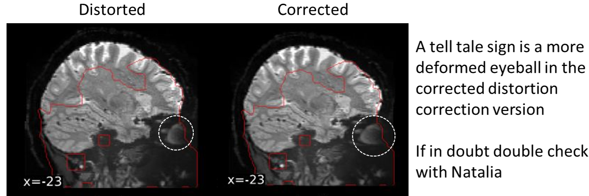

fMRIprep analysis
Link to fMRIprep documentation
Link to fMRIprep github (Useful information in the issues section about troubleshooting etc.)
Reasons to use fMRIprep
fMRIprep is a useful tool to preprocess fMRI data in a manor that can be reproducible across research
Where possible fMRIprep should be used in preprocessing to limit the variability involved in preprocessing data
fMRIprep follows the BIDS format see here on how to validate bids
Permissions
fMRIprep is run as a docker container meaning that you will need to be added to the docker group on the server before running it
Before running fMRIprep it is necessary to create the folders that fMRIprep uses
- Scratch directory (meaning just the temporary output files for fMRIprep)
- Output directory (The actual output of fMRIprep)
To create the folders first run the following:
mkdir $niidir/../fmriprep_tmp
mkdir $niidir/derivatives/fmriprepTo avoid the output folders of fMRIprep being owned by
rootyou can run fMRIprep with the following flags:docker run -u $(id -u):$(id -g) ...
NOTE: using fitlins does not currently work using the flag -u $(id -u):$(id -g) the user must specify their user id directly e.g. -u 1087:1092 see post about fitlins
Example fMRIprep scripts
fMRIprep without prerun FreeSurfer
An example script of fMRIprep when there is no prerun FreeSurfer
export PATH=~/local/python2/:$PATH
export FREESURFER_HOME=/usr/local/freesurfer_7.3.2
export MATLAB=/usr/bin/matlab
export FSL_DIR=/usr/local/fsl
export FSF_OUTPUT_FORMAT=nii.gz
niidir=/storage/adam/CLAUS_3T/pilots/bids
export SUBJECTS_DIR=$niidir/derivatives/freesurfer/
path=($path /usr/local/matlab/R2019b/bin/)
source $FREESURFER_HOME/SetUpFreeSurfer.sh
subject=sub-01
rsync -a -v $niidir/$subject/ses-1/anat/*T1w.nii.gz $niidir/../all_anat_faced/
#--- deface ---#
scansForDefacing=$(ls -1 $niidir/$subject/ses-1/anat/*.nii.gz)
echo $scansForDefacing
for theScan in $scansForDefacing; do
echo "defacing scan $theScan"
pydeface $theScan --outfile $theScan --force
done
#--- mriqc (current v 23.0.1) ---#
docker run -it --rm -v $niidir:/data:ro -v $niidir/derivatives/mriqc:/out nipreps/mriqc:23.0.1 /data /out participant --participant_label $subject --no-sub
mkdir $niidir/../fmriprep_tmp
mkdir $niidir/derivatives/fmriprep
docker run -u $(id -u):$(id -g) --rm -it \
-v /usr/local/freesurfer_7.3.2/license.txt:/opt/freesurfer/license.txt \
-v $niidir/../fmriprep_tmp:/scratch -v $niidir:/data:ro \
-v $niidir/derivatives/fmriprep:/out \
-v $niidir/derivatives/freesurfer:/sub-dir nipreps/fmriprep:21.0.1 \
/data /out participant --participant-label $subject \
--md-only-boilerplate --skip-bids-validation --stop-on-first-crash --nthreads 4 -w /scratch --output-spaces T1w
fMRIprep prerun FreeSurfer (no hires)
An example script with prerun FreeSurfer (without hires options and biascorrecing the anatomical scan):
export PATH=~/local/python2/:$PATH
export FREESURFER_HOME=/usr/local/freesurfer_7.3.2
export MATLAB=/usr/bin/matlab
export FSL_DIR=/usr/local/fsl
export FSF_OUTPUT_FORMAT=nii.gz
niidir=/storage/adam/CLAUS_3T/pilots/bids
export SUBJECTS_DIR=$niidir/derivatives/freesurfer/
path=($path /usr/local/matlab/R2019b/bin/)
source $FREESURFER_HOME/SetUpFreeSurfer.sh
subject=sub-01
rsync -a -v $niidir/$subject/ses-1/anat/*T1w.nii.gz $niidir/../all_anat_faced/
#--- deface ---#
scansForDefacing=$(ls -1 $niidir/$subject/ses-1/anat/*.nii.gz)
echo $scansForDefacing
for theScan in $scansForDefacing; do
echo "defacing scan $theScan"
pydeface $theScan --outfile $theScan --force
done
#--- mriqc (current v 23.0.1) ---#
docker run -it --rm -v $niidir:/data:ro -v $niidir/derivatives/mriqc:/out nipreps/mriqc:23.0.1 /data /out participant --participant_label $subject --no-sub
# freesurfer
recon_path=$niidir/$subject/ses-1/anat/*.nii.gz
recon-all -all -i $recon_path -s $subject -threads 4
mkdir $niidir/../fmriprep_tmp
mkdir $niidir/derivatives/fmriprep
# Here we add the flag --fs-output-dir to specify the directory where freesurfer output is located
docker run -u $(id -u):$(id -g) --rm -it \
-v /usr/local/freesurfer_7.3.2/license.txt:/opt/freesurfer/license.txt \
-v $niidir/../fmriprep_tmp:/scratch -v $niidir:/data:ro \
-v $niidir/derivatives/fmriprep:/out \
-v $niidir/derivatives/freesurfer:/sub-dir nipreps/fmriprep:21.0.1 \
/data /out participant --fs-subjects-dir /sub-dir --participant-label $subject \
--md-only-boilerplate --skip-bids-validation --stop-on-first-crash --nthreads 4 -w /scratch --output-spaces T1w
Troubleshooting
I ran fMRIprep but no distortion correction happened
fMRIprep might be using an outdated BIDS specification. Here this is related to the fmap
jsonfile. See Information about BIDS uri.- If your fmap .json file is using the BIDS uri specification in the
IntendedForfield and you are using an older fMRIprep version then this will need to be changed to the older path specification e.g.
BIDS uri spec:
"IntendedFor": [ "bids::sub-1181001/ses-1/func/sub-1181001_ses-1_task-movie_run-1_bold.nii.gz", "bids::sub-1181001/ses-1/func/sub-1181001_ses-1_task-movie_run-2_bold.nii.gz", etc ]Older fmap spec:
"IntendedFor": [ "ses-1/func/sub-1181001_ses-1_task-movie_run-1_bold.nii.gz", "ses-1/func/sub-1181001_ses-1_task-movie_run-2_bold.nii.gz", etc ]- If your fmap .json file is using the BIDS uri specification in the
- I ran fMRIprep and the distortion correction of the data is too extreme

This is an issue with certain issues of fMRIprep. Using fMRIprep version 20.2.7 may be needed to avoid the extreme distortion correction (newer versions of fMRIprep haven’t been tested)
If using already run FreeSurfer
recon-alloutput and have specified anexpert-optsfile then fMRIprep shows multiple errors- In the directory that has the prerun
recon-allthere is a folderscriptsthat saves theexpert-optsfile. Removing this file allows fMRIprep to run
- In the directory that has the prerun
If fmriprep fails silently (i.e. gives no error) on coregistering the functional to the structural scan, the solution is (if your structural and functional scans are from the same session) to add the following flag:
--bold2t1w-init header